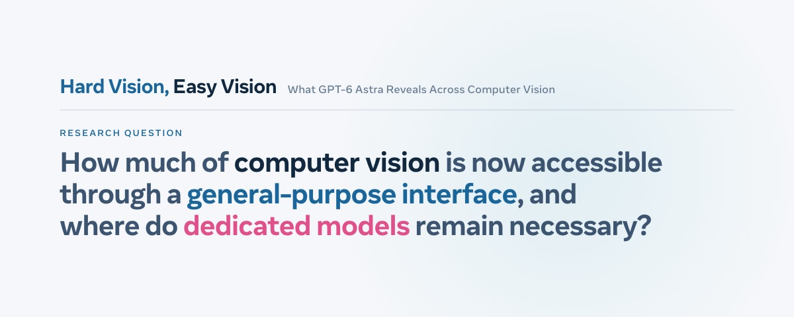

Hard Vision, Easy Vision: What GPT-6 Astra Reveals Across Computer VisionarXiv 2026
We test GPT-6 Astra and five other frontier AI systems on 34 capabilities and 55 benchmarks across nine areas of computer vision, sorting each capability into a maturity tier. Semantic reasoning now nears reference levels, while metric geometry, faithful reconstruction and consistent video prediction remain hard.
Six frontier AI systems on 55 vision benchmarks: semantic reasoning nears reference levels, while metric geometry and dense video prediction remain hard.